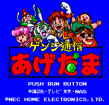

Genji Tsuushin Agedama - PC-Engine Games

- Company: NEC Home Electronics
- Date Released: 13 Dec 1991
- Price (in yen): 5800
From Mike Koos:
Debug Mode: At the title screen, hold 1, 2 and press Select.
Anime Video Game Resource Center © 1998 by Luis A. Cruz